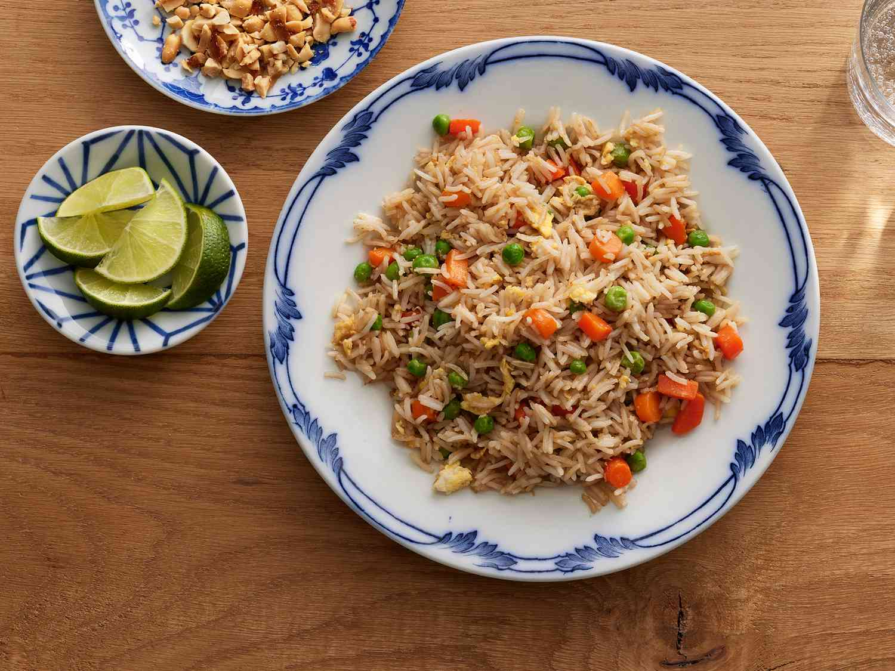

Ultimate Fried Rice
Return to Main Page

Description
Our Ultimate Fried Rice is a delicious,
one-pan meal that combines crispy day-old rice
with savory garlic, onion, and a colorful mix of vegetables.
Tossed with your choice of protein and seasoned with soy sauce and
sesame oil, this flavorful dish is quick, satisfying, and perfect
for any occasion.
Ingredients
- 2 cups cooked rice
- 2 tablespoons vegetable oil
- 2 cloves garlic
- 1 small onion
- 1 cup mixed vegetables
- 2 eggs
- 1 cup cooked protein (chicken, shrimp, pork, or tofu, diced)
- 3 green onions
- 2-3 tablespoons soy sauce
- 1 tablespoon oyster sauce
- 1 teaspoon sesame oil
- 1Salt and pepper
Instruction
-
Prep Your Ingredients:
- Make sure your rice is cold and separated. If
you’re using leftover rice, it should be refrigerated.
- Chop your vegetables and protein into bite-sized pieces.
-
Cook the Vegetables:
-
Heat 1 tablespoon of vegetable oil in a large
skillet or wok over medium-high heat.
-
Add the minced garlic and chopped onion. Sauté until
fragrant and the onion is translucent, about 2 minutes.
-
Add the mixed vegetables and cook until they are tender-crisp,
around 3-4 minutes. Remove the vegetables from the skillet
and set aside.
-
Scramble the Eggs:
-
In the same skillet, add a bit more oil if
needed and pour in the beaten eggs. Scramble
them until fully cooked. Remove the eggs from
the skillet and set aside with the vegetables.
-
Stir-Fry the Rice:
-
Add the remaining oil to the skillet. Increase the heat to high.
-
Add the cold rice, breaking up any clumps.
Stir-fry for about 2-3 minutes, ensuring
the rice is heated through and slightly crispy.
-
Combine Ingredients:
-
Return the cooked vegetables, scrambled eggs, and
protein to the skillet. Stir well to combine.
-
Pour in the soy sauce, oyster sauce (if using), and sesame
oil. Mix everything together until well combined and heated
through. Adjust seasoning with salt and pepper if needed.
-
Finish and Serve:
-
Stir in the chopped green onions and cook for an additional minute.
-
Remove from heat and transfer to serving plates.
-
Garnish with optional toppings like sesame seeds, chopped cilantro,
sliced chili peppers, or a squeeze of lime juice.